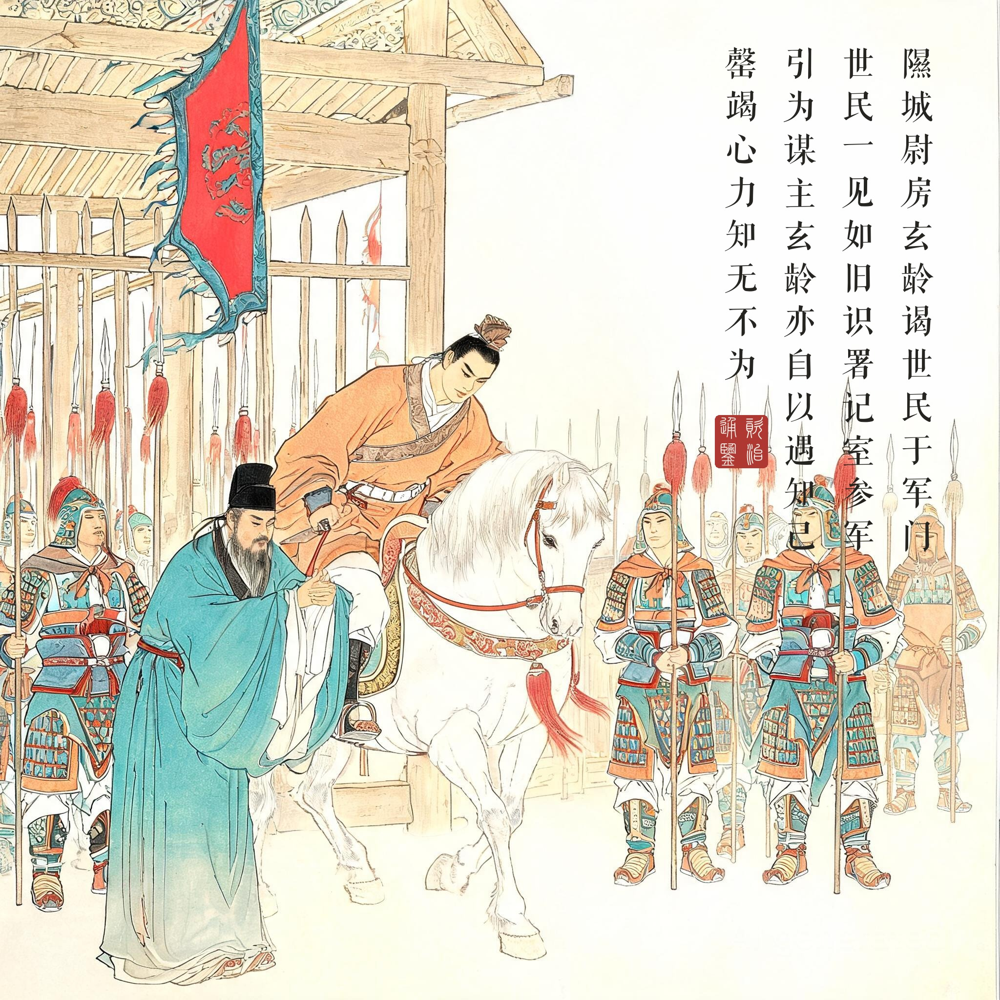
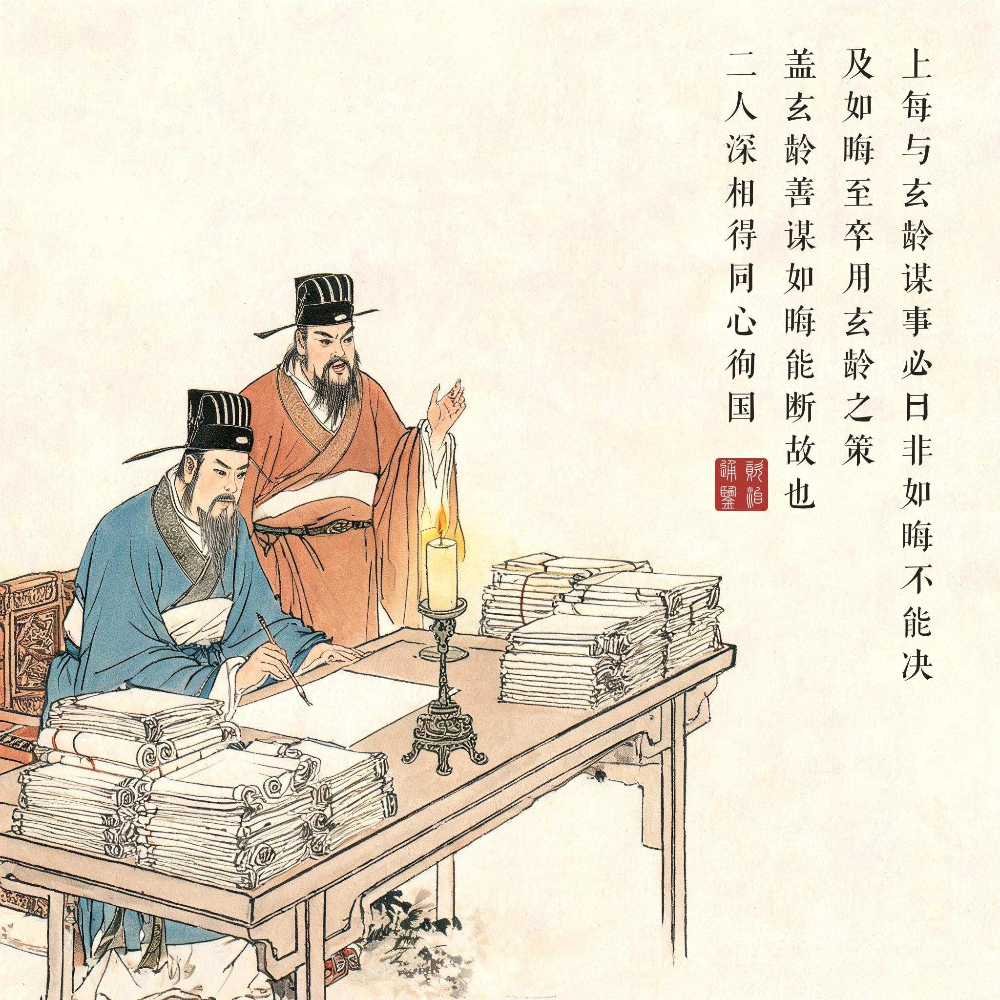
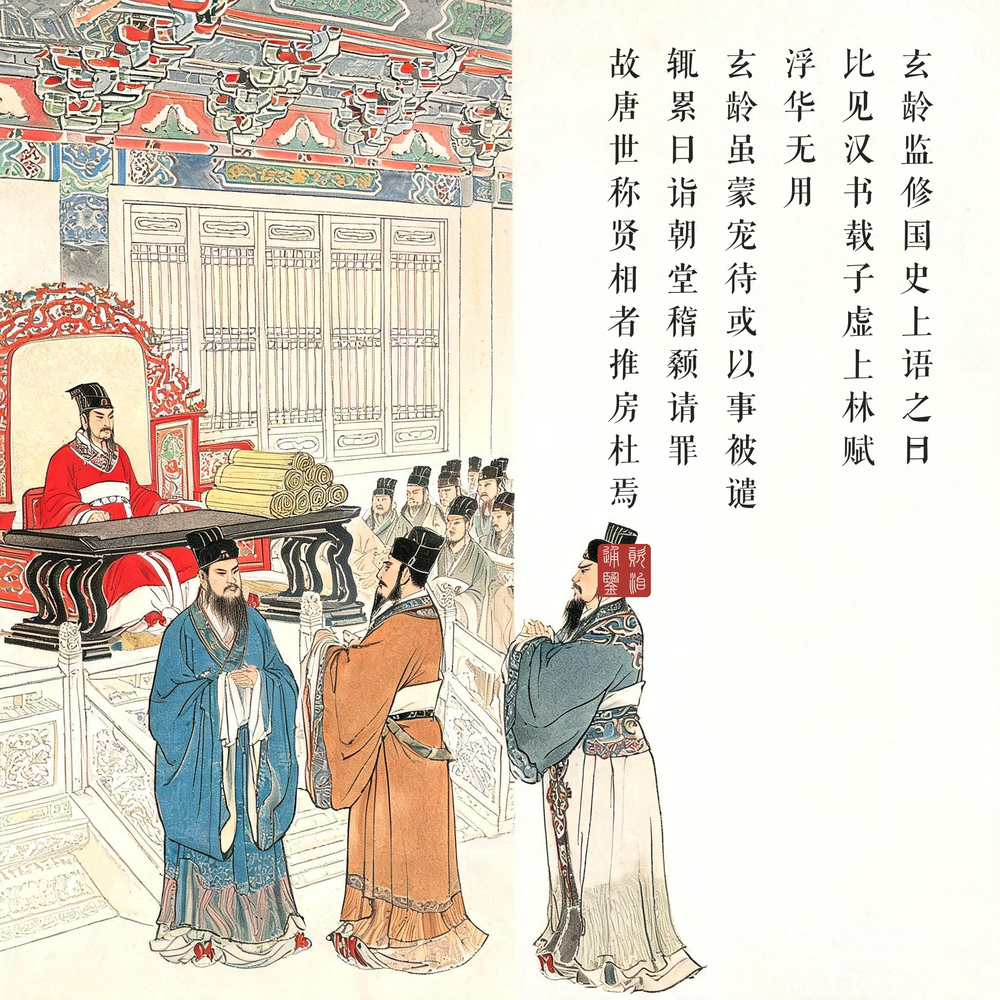

《资治通鉴 · 卷第一百九十三 · 唐纪九》太宗文武大圣大广孝皇帝上之中贞观三年（公元 629 年）
（据 daizhigev20《资治通鉴》底本节录。前情：卷一百九十一，武德元年房玄龄谒世民于渭北军门）
隰城尉房玄龄谒世民于军门，世民一见如旧识，署记室参军，引为谋主。玄龄亦自以遇知己，罄竭心力，知无不为。……上每与玄龄谋事，必曰：“非如晦不能决。”及如晦至，卒用玄龄之策。盖玄龄善谋，如晦能断故也。二人深相得，同心徇国，故唐世称贤相者，推房、杜焉。玄龄虽蒙宠待，或以事被谴，辄累日诣朝堂，稽颡请罪，恐惧若无所容。……玄龄监修国史，上语之曰：“比见《汉书》载《子虚》、《上林赋》，浮华无用。其上书论事，词理切直者，朕从与不从，皆当载之。”……蔡成公杜如晦疾笃，上遣太子问疾，又自临视之。甲申，薨。上每得佳物，辄思如晦，遣使赐其家。久之，语及如晦，必流涕，谓房玄龄曰：“公与如晦同佐朕，今独见公，不见如晦矣！”
隰城县尉房玄龄到军门拜谒李世民，世民一见如故识，任他为记室参军，引为谋主。房玄龄也自认为遇到了知己，竭尽心力，知道的事没有不做的。……太宗每次与房玄龄谋事，必定说：“这事非杜如晦不能决断。”等杜如晦来了，最终用的还是房玄龄的计策。这是因为房玄龄善于谋划、杜如晦能于决断的缘故。二人深相交得，同心为国，所以唐代称贤相的，都推房、杜二人。房玄龄虽然蒙受宠信优待，但有时因事受谴责，就连日到朝堂磕头请罪，惶恐得像无处容身。……房玄龄监修国史，太宗对他说：“近来见《汉书》载《子虚赋》《上林赋》，浮华无用。凡上书论事、文辞道理切实直率的，朕采纳与否，都应当记下来。”……蔡成公杜如晦病重，太宗派太子问疾，又亲自探视。甲申日，杜如晦去世。太宗每次得到佳物，就想起如晦，派使者赐给他的家人。过了很久，说起如晦，必定流泪，对房玄龄说：“您和如晦共同辅佐朕，如今只见您，见不到如晦了！”
一对搭档的组织学。“房谋杜断”常被当成两句并列的赞语，读《通鉴》原文才知道这是一套精妙的机制：玄龄谋事到深处，自己知道有多种可能，所以请如晦来选；如晦选中的，往往就是玄龄本意最深处的那一种。善谋者多谋而难自决，善断者以决为专长——两个半圆合成一个整圆，唐初的政务中枢由此有了两个半脑。贞观之治的后人常归功于纳谏（魏征），但把制度搭起来的是这一对：律令、官制、行政流程，全是“房谋杜断”的产物。组织史上最理想的搭档关系，几乎没有超出这四个字的。
见与不见。本回最动人的是末尾：太宗“每得佳物，辄思如晦”——得了好东西想给一个人，那个人已经不在了。“公与如晦同佐朕，今独见公，不见如晦矣！”这句话被司马光原样保留，因为它写出了权力的边界：皇帝可以封你公爵、赐你佳物，却不能让你多活一天。贞观四年这个帝国正在上升的顶点，而它的设计者之一先下车了——玄龄此后二十多年的每一次请罪、每一份奏章，都带着“代如晦多做一点”的意思。读画看第三幕：并立阶前的两个宰相，一个青袍沉静、一个赭袍英决——他们身后的大殿越空，这组人物越满。
“词理切直者皆当载之”。君相对话里藏着一个极现代的新闻观：辞藻华丽的可以不记，直言之谏不论采纳与否都要记。这是给史官（也是给一切记录者）的价值授权——记录的标准不是权力的好恶，是言说的质量。本系列连环画按《通鉴》原文逐字入画，也算隔着一千四百年对这段话的一次践行。